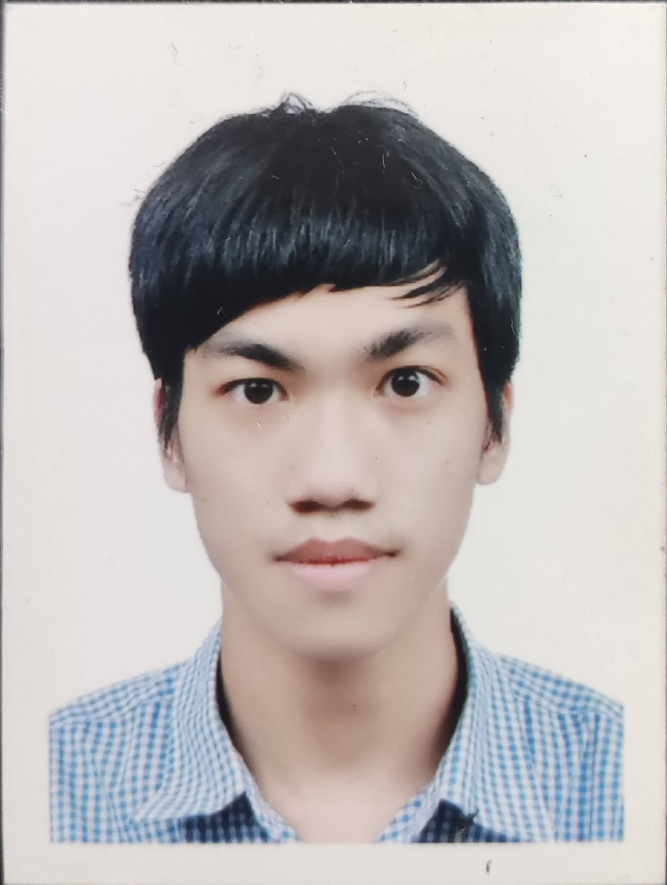

希望職稱 / 現職角色（全、後端工程師 / 待業中）
我是葉彥廷，畢業於中華科技大學遊戲系統創新設計系，擅長邏輯思考與問題解決，並具備優良的跨領域技術整合能力。在學期間，我深入奠定了 C#、C++ 與 Python 的程式開發基礎，並熟練掌握 Unity 與 Unreal 等主流遊戲引擎開發流程，同時具備 2D 繪圖（Photoshop）、3D 建模（3D Max、Blender）及專案管理的實務經驗，能從多個維度進行產品構思與實作。 為了進一步拓展技術邊界並強化大型系統的架構設計能力，畢業後我積極參加外部專業工程師培訓，專注於 Java 後端開發領域。期間精進了 Spring Boot 架構、MySQL 資料庫設計與優化、Git / GitHub 版控流程、AWS 雲端部署，以及將 AI 工具融入開發實務的能力。 我熱衷於探索新技術與持續優化系統流程，期許自己能結合遊戲開發累積的創意思維與後端工程的嚴謹技術，為團隊打造穩定、高效且具備擴充性的系統服務，成長為能獨當一面的全方位軟體工程師。